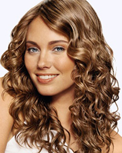
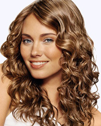

ဆံပင္ အ ေကာက္ ပိုင္ ရွင္
 

၁။ ေရ ေအးျဖင့္ သာ ေခါင္း ေလွ်ာ္ ပါ။
၂။ တစ္ ပတ္ မွာ ႏွစ္ ခါထက္ ပုိျပီး ေခါင္း မ ေလွ်ာ္ သင့္ ပါ။
၃။ ေခါင္း ကို တဘက္ ႏွင့္ ပတ္ မထားပါႏွင့္။
၄။ ဆံပင္ ေတြစိုေနခ်ိန္ မွာ ေခါင္း ဖီးျခင္း က ေျခာက္ ေနခ်ိန္ မွာ ေခါင္း ဖီးျခင္း လိုပဲ ဆံပင္ ေတြကို ကၽြတ္ ဆတ္ က်ိဳးပဲ့ ေစႏိုင္ ပါတယ္။ ဒါေၾကာင့္ ဘီးအစား လက္ ကို အသံုးျပဳသင့္ ပါတယ္။
၅။ ဆံပင္ ေပ်ာ့ ေဆးသံုးပါ။
၆။ ေရကူး ေသာအခါတုိင္း ေခါင္း ေဆာင္း ေဆာင္း ပါ။
၇။ အဖ်ား ႏွစ္ ခြျဖစ္ ေန ေသာ ဆံပင္ မ်ားကို ညွပ္ပါ။
၈။ ၾကက္ ဥအႏွစ္ ၂လံုးကို ေရ ေႏြး၊ ပ်ားရည ္၂ ဇြန္း ႏွင့္ ႏွစ္ သက္ ရာ ဆီ တစ္ မ်ိဳးထည့္ ျပီး ေရာ ေမႊပါ။ ေျခာက္ ေအာင္ သုတ္ ထား ေသာ ေလွ်ာ္ ျပီးစ ဆံပင္ မွာ လိမ္းပါ။
၉။ ေထာပတ္ သီး၁ျခမ္း၊ mayonnaise ၁ခြက္ ကို စက္ ထဲထည့္ ညက္ ေအာင္ ျပဳလုပ္ ျပီး ဆံပင္ ေပၚတြင္ လိမ္းပါ။ ေခါင္း ေဆာင္း ေဆာင္း ျပီး မိနစ္ ၃၀ခန္႔ အၾကာမွာ ေရ ေဆးပါ။